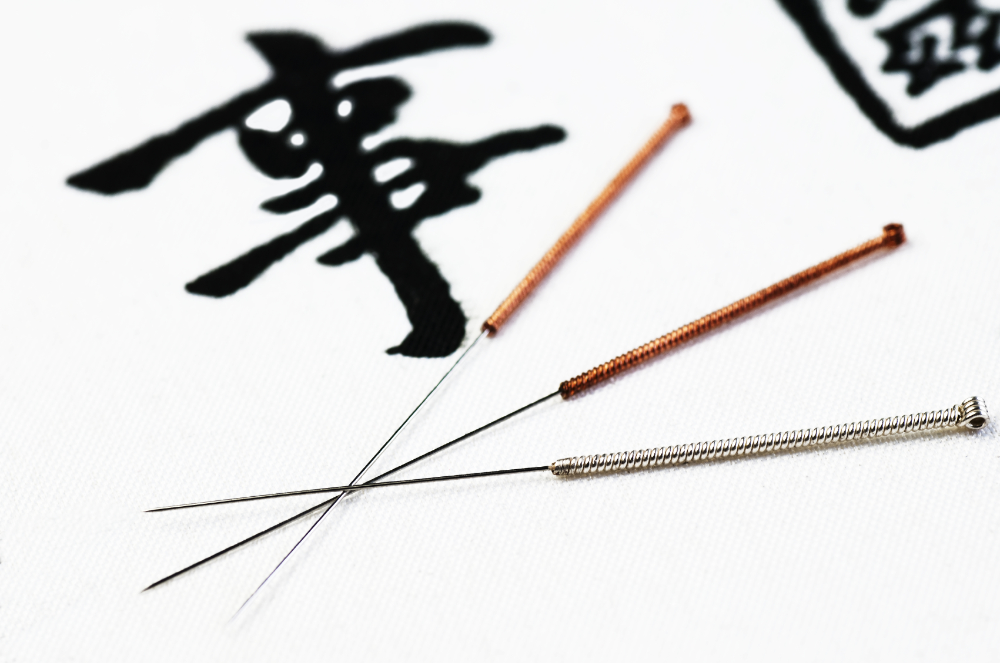

isabelle.integmed@icloud.com
512-879-6555
(no text messages)
WELCOME ABOUT SERVICES PEDIATRICS APPOINTMENTS FAQ
ACUPUNCTURE
ASIAN BODY WORK THERAPY
CHINESE HERBAL FORMULAS
COMPLEMENTARY TECHNIQUES
What is Acupuncture?
Several thousand years ago, East Asian practitioners discovered that the body forms disharmonies as a result of the various physical and mental stresses of life. Asian medical theory explains these disharmonies as an imbalance of opposing forces called yin and yang. This imbalance disrupts the movement of the body's vital energy (qi) along the meridian pathways, which are channels through which the body's energy is thought to flow. Acupuncture restores the smooth flow of qi. By inserting and manipulating needles at specific points on the body, I am able to return the body to its natural balance and promote the body's ability to heal itself.
Having evolved over thousands of years, acupuncture is one of the oldest continually practiced medical modalities in the world. A treatment involves the insertion and manipulation of flexible, hair-thin needles at specific points along the body's meridian pathways, which are channels through which the body's energy is thought to flow. Acupuncture is an effective way to promote the body's remarkable self-healing abilities. It is used to prevent and treat disease, relieve pain, balance mood, enhance athletic performance, increase fertility, and improve overall health and wellness.
What Does Acupuncture Feel Like?
 Many first-time clients are concerned that acupuncture needles will feel like hypodermic injections at the doctor's office. They won't. Acupuncture uses hair-thin, flexible needles that you will hardly feel when I insert them. When I gently stimulate the needles they may produce a unique sensation that Asian medicine calls de qi. Clients often describe de qi as a heavy, achy pressure, or spreading, traveling feeling. You may also feel an "electrical" sensation moving down the meridian pathways, though this is less common. I also use Japanese acupuncture techniques where each needle is inserted more superficially and within this style, non-insertive needle techniques which simply touch the skin at the point can be used. Japanese acupuncture is beneficial for all types of clients but is especially suited for children. Most clients find these acupuncture sensations deeply satisfying and leave the treatment feeling relaxed both mentally and physically.
How Many Treatments Will I Need?
The benefits of acupuncture are cumulative, so more than one treatment is necessary. For acute conditions you can expect to have 10 to 15 treatments, but you will usually begin to feel relief after just the first few. Chronic conditions may take longer to respond, depending on the type, severity, and duration of the condition. Preventative treatments and treatments for general well-being may also be scheduled on an as-needed basis.
Is Acupuncture Safe?
Acupuncture is used by millions of Americans every year. Acupuncturists are required to undergo extensive education, including detailed study of human anatomy and training in Clean Needle Technique. I have passed comprehensive national board examinations administered by the National Certification Commission for Acupuncture and Oriental Medicine (NCCAOM) and am licensed by the state of Texas. As required by law, we use pre-sterilized, disposable, single-use needles to ensure your maximum safety.
Your First Visit
When you arrive for your first acupuncture appointment I will ask you to complete a comprehensive intake form. The acupuncture intake form asks questions about your current state of health, past illnesses, and family history. These questions are important because the holistic approach of integrative medicine takes everything into account. Your current symptoms may not seem related to past health issues, but our bodies are complex landscapes and everything that happens to them leaves its mark.
After reviewing your intake form, we will discuss your condition, and we will examine your pulse and tongue, which are two of the basic diagnostic methods of Traditional Chinese medicine. The acupuncture points we choose will depend on your condition, but you can expect approximately 20 needles. Once the needles are inserted, we will leave you to lie comfortably for 15-30 minutes with the needles in place. Many people find acupuncture treatment deeply relaxing, and it is not uncommon for clients to fall asleep during this time.
What Can Acupuncture Treat?
Acupuncture works by activating the body's own healing powers, so it can be beneficial for many health conditions. The World Health Organization (WHO) has documented many symptoms, diseases, and conditions that have been shown in controlled clinical trials to be effectively treated with acupuncture. Below are some common conditions we can treat, but please feel free to contact me about your specific health condition.
Pain
- Sports injuries
- Muscle pain
- Back, neck and shoulder pain
- Leg, ankle and foot pain
- Arm, wrist and hand pain
- Knee pain
- Hip pain
- Carpal tunnel syndrome
- Tennis Elbow
- Repetitive strain injuries
- Jaw pain (TMJ)
- Dental pain
- Sciatica
- Arthritis
- Tendonitis
- Myofascial pain syndrome
- Headaches and migraines
- Postoperative pain
Digestive Issues and Nausea
- Chronic indigestion, loose stools or constipation
- Irritable Bowel Syndrome (IBS)
- Easing side effects of chemotherapy
- Heartburn, acid reflux, peptic ulcer
- Acute and chronic gastritis
- Morning sickness
- Nausea and vomiting
- Stress
- Anxiety
- Insomnia
- Depression
- Sinusitis
- Allergies
- Cough
- Infertility
- Increased efficacy of In Vitro Fertilization (IVF)